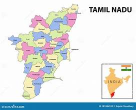

he Tamil Nadu State Election Commission is the body responsible for conducting local body elections in Tamil Nadu. It manages elections for corporations, municipalities, town panchayats, district panchayats, and village panchayats across the state. The commission works independently to ensure free and fair elections at the local government level.Its main duties include preparing voter lists, announcing election dates, monitoring candidates and political parties, arranging polling stations, conducting vote counting, and declaring results. While the Election Commission of India handles Assembly and Parliament elections, the Tamil Nadu State Election Commission mainly handles local body elections within Tamil Nadu.
